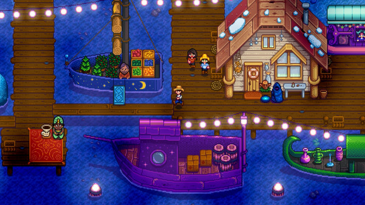
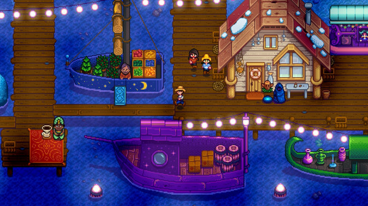

“Far more than just a farming game, this one-man labor of love is filled with seemingly endless content and heart.”
5/5 – Giant Bomb
You've inherited your grandfather's old farm plot in Stardew Valley. Armed with hand-me-down tools and a few coins, you set out to begin your new life. Can you learn to live off the land and turn these overgrown fields into a thriving home?

 


5/5 – Giant Bomb
95 – Destructoid
95 – CGMagazine